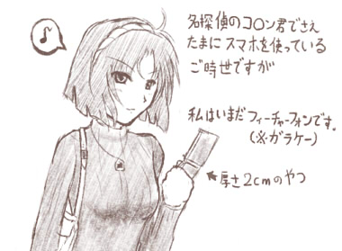
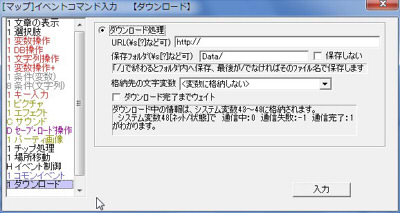

■
2013-02-03 (日) ウディタVer2.10ベータ▼
別言語対応に向けての改修を行っていました。

あんまり関係ない落書き。
今回実装された目玉の新機能は、『ダウンロード機能』！
インターネット上からファイルをダウンロードすることが主ですが、
CGIと連携すれば片道勇者のようなキャラクター同期や、
ランキング機能、ゲーム上掲示板やチャットなどが実現可能です。
ただしその場合は、サーバ負荷にきわめて注意してください。
プレイヤー人数が増えれば、あっという間に制限がかかったり、
サーバの人から怒られたりするので、慎重な運用が必要です。
【ダウンロードコマンド入力画面】

【オンラインアップデートはどうやるの？】
オンラインアップデートは、ファイルをアップできる
サーバさえ持っていれば、割と簡単に実現できるでしょう。
【１】バージョン番号と更新内容を書いたテキストをサーバにアップして、
一日に一回くらいの頻度でダウンロードしにいく。
（システムセーブデータなどに、最後にDLした日付を
保存すれば一日一回が実装できるでしょう）
【２】もしDLしたテキストから、今より新しいバージョンが
あると分かれば、更新ファイルをダウンロードする。
片道勇者やシル学では、このような処理を行っています。
【CGI負荷軽減のコツ】
上のようなファイルをダウンロードするだけの場合とは別に、
「CGI」を使う場合は「負荷」も重要な問題になってきます。
（CGIはランキング機能、ゲーム上掲示板やチャットを実現するときに使う）
基本的には、送信時だけCGIを使って、受信時は
「CGIによって生成されたテキストファイル」を直接ダウンロードして、
それをウディタ内で処理するのがおすすめです。
CGIを呼び出す回数は、「読み込み」回数が「書き込み」回数の
10倍以上になる場合が多いので、読み込み時は
テキストファイルを直接ダウンロードすることで
CGI負荷を大幅に削減できるわけですね。
通信回数は、最も多い頻度で1分間に6回程度にしてください。
それ以上たくさん通信しようとすると、
ウディタ側でもリミッタがかかるようになります。
ちなみに『片道勇者』では、クリア時とゲームオーバー時だけ通信確定で、
それ以外は2～8分に一回だけCGIに送信するような仕組みにして、
かつC++でCGIを組んで、やっと負荷がギリギリという感じでした。
【ダウンロード機能、ってことはデータ送信はできないの？】
CGIを使えば、文字列や数値を送信することが可能です（画像やファイルは×）。
ウディタで可能なのは「GET送信」ですが、これだけでも
ランキングや掲示板・チャットくらいの実現は十分に可能でしょう。
GET送信というのは、URLに送りたい情報を含めて送信する方式です。
たとえばURLに、
http://www.aaa.com/test.cgi?name=WOLF&comment=OK!&num=3
なんて入れた場合、「test.cgi」のCGIは、「?」以降の
「name=WOLF&comment=OK!&num=3」の文字列を受け取ることができます。
これが、GET方式によるデータの受け渡しです。
あとは、受け取った文字列をCGI側でうまいこと処理して、
ファイルに書き込んだりするわけです。
うまいこと使えばチャットや掲示板も作れそうだとイメージできるでしょうか。
問題点としては、ランキングなどで不正を容易に行うことができるので、
何らかのデータ正当性チェックの機能も必要だろうということです。
そこまで考え始めると、かなりの知識と経験が必要になってしまうでしょうね。
この機会にPerlスクリプトなどに手を出してみるのも面白いかもしれませんよ！
ただしサーバの中の人に迷惑をかけないよう、くれぐれも注意してください。
基本的には、今回の新機能はきわめて上級者向けの機能です。
【シル学ユーザデータ差し替え】
今週は、以下のユーザデータを最新版に差し替えました。
気になる方は、再ダウンロードを行ってください。
ユーザデータの更新、お疲れ様です！ 見習います！
＞新クラス『災害対策部』
＞武運部イベント追加
＞新クラス『FinalChallenge』
＞トーテム追加『イーリス』
以下は拍手返信です。
皆さまからの拍手コメント、いつも本当にありがとうございます！
＞ふと考えてしまいましたが、シル学の教員達ってどれくらい稼いでるんでしょうか？
＞ジュド先生が「今は330シルバしか」と言ってる一方で、 .
＞教頭が神話杯を開催し、かつ莫大な賞金を用意できるほど恵まれてますし。 .
＞ロベルトが使わないだけなのか、それともジュド・エージスが浪費しがちなだけなのか。
＞できれば具体的な数値を教えていただけませんか？ .
シル学の1シルバはおおよそ日本円の10円と同じくらいの価値で、
ジュドやエージスは月給が2～3万シルバくらいだと思います、
教頭や学長で3～4万シルバくらい（※偉い人でも少なめなのはお金がないため）。
ジュドの財布の中身が少ないのは、普段は学校の食堂と飲み物代くらいしか
持ち歩いていないからです（銀行口座にはたんまりあるでしょうけど）。
教頭はどちらかというと、すさまじい強さから来る妙な人脈があるからでしょう。
神話杯の放映権が海外に高く売れたり、チケットが売れたり、
人脈を経由してスポンサーなんかも付いてるかもしれません。
そのスケールで見れば、バニー・実況者その他の人員を動員するお金や
優勝賞金の15万シルバ（150万円）も大した額ではなさそうです。
サムライ闘技の大会なんてどこもやってませんから、注目度も割と高そうですしね。
ウディタの修正が一通り終わったら、いよいよ次回作に移る予定です。
シル見リメイクの素材やストーリーも気晴らしに徐々に作りつつ、
まずは色々新作プロトタイプを作ってみて、
面白さの素質がありそうなものを探すところからでしょうね。
（そもそも来週までにそこまで行けるか謎ですが！）
何はともあれ、マイペースでがんばります！
最近は空気が悪くて体がつらーい！
皆さんも無理はなさらぬよう、お気を付け下さい。 カテゴリ: ウディタ
カテゴリ: ウディタ カテゴリ: ウディタ
カテゴリ: ウディタ